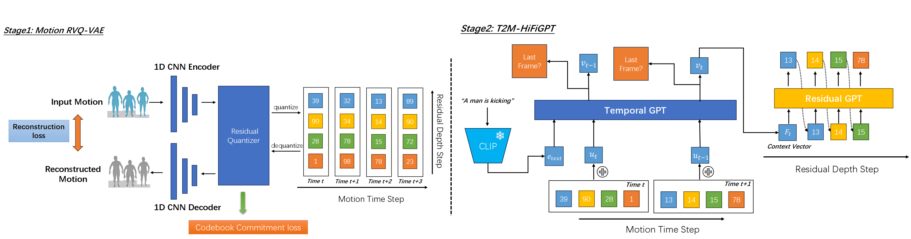

Abstract
This study introduces T2M-HiFiGPT, a novel conditional generative framework for autoregressively synthesizing human motion from textual descriptions. This framework is underpinned by a Residual Vector Quantized Variational AutoEncoder (RVQ-VAE) and a double-tier Generative Pretrained Transformer (GPT) architecture. We demonstrate that our CNN-based RVQ-VAE is capable of producing highly accurate 2D temporal-residual discrete motion representations. Our proposed double-tier GPT structure comprises a temporal GPT and a residual GPT. The temporal GPT efficiently condenses information from previous frames and textual descriptions into a 1D context vector. This vector then serves as a context prompt for the residual GPT, which generates the final residual discrete indices. These indices are subsequently transformed back into motion data by the RVQ-VAE decoder. To mitigate the exposure bias issue, we employ straightforward code corruption techniques for RVQ and a conditional dropout strategy, resulting in enhanced synthesis performance. Remarkably, T2M-HiFiGPT not only simplifies the generative process but also surpasses existing methods in both performance and parameter efficacy, including the latest diffusion-based and GPT-based models. On the HumanML3D[1] dataset, our framework achieves exceptional results across nearly all primary metrics. We further validate the efficacy of our framework through comprehensive ablation studies on the HumanML3D[1] dataset, examining the contribution of each component. Our findings reveal that RVQ-VAE is more adept at compactly capturing precise 3D human motion with comparable computational demand compared to its VQ-VAE counterparts. As a result, T2M-HiFiGPT enables the generation of human motion with significantly increased accuracy, outperforming recent state-of-the-art approaches such as T2M-GPT[3] or Att-T2M[4].
Pipeline
Qualitative Comparison
"a man has picked up an object while bending down and kneeling on his right side"
"from a standing pose with both arms raised, the person twists from right to left and then from left to right"
"a person dancing like michael jackson"
"the stick figure is walking in form of a back wards letter j"
"person is doing an excercise with hands forward"
"a person steps backwards with their left foot and stretches"
"the person is walking slowly like a monster"
"this person moves as if stepping on a ladder and reaches with his left arm"
"the person steps forward and claps"
"a person who is warming up their arms and legs"
"figure appears to be stretching or warming up"
"person stand in t position, interlocks hands, then returns to t"
"a person walks in a clockwise circle"
"a person has hands by his hips and walks to the left"
"a person walks while swinging his arms"
"a person is performing dance moves"
More Results
"a person walks away diagonally to his right, picks something up, walks back, and then he again walks diagonally to his right and picks something up."
"figure gets down on hands and knees facing left and crawls 3 steps before turning around and crawling to the right for 4 steps, backs up slightly and stands back up facing forward."
"a person who is standing with his hands at his sides, bends over, crosses his legs and sits down, then uses his arms to push himself up almost to a standing position."
"a person with their hands on their chest and elbows out to the side flaps their elbows several time turned slightly to the right the wiggles to the left side and then wiggles to their right side and repeats the elbow flapping motion."
"a person takes a step forward, pivots on their left foot and turns 180 degrees and walks back to where they started, but facing the opposite direction."
"the toon is crouched down on one knee, stands up shuffles, raising both hands in front of them while walking to the end of the plane & turning around."
"a person begins from a standing position, begins to run to their left, turns around almost immediately, runs several steps, turns back around, and returns to their starting position."
"a person turns to the left, picks up an object and holds it near their head, places the object down and turns to the right."
"a person keeps his hands up to the sides at head level, squats almost to the floor and rises, squats again until thighs are parallel to the floor and quickly rises, and squats almost to the floor and rises."
"a person places both hands on the arms of a chair, scoots body forward, and then leans forward and stands up placing both feet together in the end."
The Architecture Details of Motion RVQ-VAE
(encoder): Encoder( (last_layer): Conv1d(512, 512, kernel_size=(3,), stride=(1,), padding=(1,)) (model): Sequential( (0): Conv1d(263, 512, kernel_size=(3,), stride=(1,), padding=(1,)) (1): ReLU() (2): Sequential( (0): Conv1d(512, 512, kernel_size=(4,), stride=(2,), padding=(1,)) (1): Resnet1D( (model): Sequential( (0): ResConv1DBlock( (norm1): Identity() (norm2): Identity() (activation1): ReLU() (activation2): ReLU() (conv1): Conv1d(512, 512, kernel_size=(3,), stride=(1,), padding=(3,), dilation=(3,)) (conv2): Conv1d(512, 512, kernel_size=(1,), stride=(1,)) ) (1): ResConv1DBlock( (norm1): Identity() (norm2): Identity() (activation1): ReLU() (activation2): ReLU() (conv1): Conv1d(512, 512, kernel_size=(3,), stride=(1,), padding=(1,)) (conv2): Conv1d(512, 512, kernel_size=(1,), stride=(1,)) ) ) ) ) (3): Sequential( (0): Conv1d(512, 512, kernel_size=(4,), stride=(2,), padding=(1,)) (1): Resnet1D( (model): Sequential( (0): ResConv1DBlock( (norm1): Identity() (norm2): Identity() (activation1): ReLU() (activation2): ReLU() (conv1): Conv1d(512, 512, kernel_size=(3,), stride=(1,), padding=(3,), dilation=(3,)) (conv2): Conv1d(512, 512, kernel_size=(1,), stride=(1,)) ) (1): ResConv1DBlock( (norm1): Identity() (norm2): Identity() (activation1): ReLU() (activation2): ReLU() (conv1): Conv1d(512, 512, kernel_size=(3,), stride=(1,), padding=(1,)) (conv2): Conv1d(512, 512, kernel_size=(1,), stride=(1,)) ) ) ) ) (4): Sequential( (0): Conv1d(512, 512, kernel_size=(4,), stride=(2,), padding=(1,)) (1): Resnet1D( (model): Sequential( (0): ResConv1DBlock( (norm1): Identity() (norm2): Identity() (activation1): ReLU() (activation2): ReLU() (conv1): Conv1d(512, 512, kernel_size=(3,), stride=(1,), padding=(3,), dilation=(3,)) (conv2): Conv1d(512, 512, kernel_size=(1,), stride=(1,)) ) (1): ResConv1DBlock( (norm1): Identity() (norm2): Identity() (activation1): ReLU() (activation2): ReLU() (conv1): Conv1d(512, 512, kernel_size=(3,), stride=(1,), padding=(1,)) (conv2): Conv1d(512, 512, kernel_size=(1,), stride=(1,)) ) ) ) ) (5): Conv1d(512, 512, kernel_size=(3,), stride=(1,), padding=(1,)) ) ) (decoder): Decoder( (last_layer): Conv1d(512, 263, kernel_size=(3,), stride=(1,), padding=(1,)) (model): Sequential( (0): Conv1d(512, 512, kernel_size=(3,), stride=(1,), padding=(1,)) (1): ReLU() (2): Sequential( (0): Resnet1D( (model): Sequential( (0): ResConv1DBlock( (norm1): Identity() (norm2): Identity() (activation1): ReLU() (activation2): ReLU() (conv1): Conv1d(512, 512, kernel_size=(3,), stride=(1,), padding=(3,), dilation=(3,)) (conv2): Conv1d(512, 512, kernel_size=(1,), stride=(1,)) ) (1): ResConv1DBlock( (norm1): Identity() (norm2): Identity() (activation1): ReLU() (activation2): ReLU() (conv1): Conv1d(512, 512, kernel_size=(3,), stride=(1,), padding=(1,)) (conv2): Conv1d(512, 512, kernel_size=(1,), stride=(1,)) ) ) ) (1): Upsample(scale_factor=2.0, mode=nearest) (2): Conv1d(512, 512, kernel_size=(3,), stride=(1,), padding=(1,)) ) (3): Sequential( (0): Resnet1D( (model): Sequential( (0): ResConv1DBlock( (norm1): Identity() (norm2): Identity() (activation1): ReLU() (activation2): ReLU() (conv1): Conv1d(512, 512, kernel_size=(3,), stride=(1,), padding=(3,), dilation=(3,)) (conv2): Conv1d(512, 512, kernel_size=(1,), stride=(1,)) ) (1): ResConv1DBlock( (norm1): Identity() (norm2): Identity() (activation1): ReLU() (activation2): ReLU() (conv1): Conv1d(512, 512, kernel_size=(3,), stride=(1,), padding=(1,)) (conv2): Conv1d(512, 512, kernel_size=(1,), stride=(1,)) ) ) ) (1): Upsample(scale_factor=2.0, mode=nearest) (2): Conv1d(512, 512, kernel_size=(3,), stride=(1,), padding=(1,)) ) (4): Sequential( (0): Resnet1D( (model): Sequential( (0): ResConv1DBlock( (norm1): Identity() (norm2): Identity() (activation1): ReLU() (activation2): ReLU() (conv1): Conv1d(512, 512, kernel_size=(3,), stride=(1,), padding=(3,), dilation=(3,)) (conv2): Conv1d(512, 512, kernel_size=(1,), stride=(1,)) ) (1): ResConv1DBlock( (norm1): Identity() (norm2): Identity() (activation1): ReLU() (activation2): ReLU() (conv1): Conv1d(512, 512, kernel_size=(3,), stride=(1,), padding=(1,)) (conv2): Conv1d(512, 512, kernel_size=(1,), stride=(1,)) ) ) ) (1): Upsample(scale_factor=2.0, mode=nearest) (2): Conv1d(512, 512, kernel_size=(3,), stride=(1,), padding=(1,)) ) (5): Conv1d(512, 512, kernel_size=(3,), stride=(1,), padding=(1,)) (6): ReLU() (7): Conv1d(512, 263, kernel_size=(3,), stride=(1,), padding=(1,)) ) ) (quantizer): RQBottleneck( (codebooks): ModuleList( (0): VQEmbedding(257, 512, padding_idx=256) (1): VQEmbedding(257, 512, padding_idx=256) (2): VQEmbedding(257, 512, padding_idx=256) (3): VQEmbedding(257, 512, padding_idx=256) (4): VQEmbedding(257, 512, padding_idx=256) (5): VQEmbedding(257, 512, padding_idx=256) (6): VQEmbedding(257, 512, padding_idx=256) (7): VQEmbedding(257, 512, padding_idx=256) (8): VQEmbedding(257, 512, padding_idx=256) (9): VQEmbedding(257, 512, padding_idx=256) ) ) (quant_conv): Conv1d(512, 512, kernel_size=(1,), stride=(1,)) (post_quant_conv): Conv1d(512, 512, kernel_size=(1,), stride=(1,))
Reference
- Chuan Guo, Shihao Zou, Xinxin Zuo, Sen Wang, Wei Ji, Xingyu Li, and Li Cheng. Generating diverse and natural 3d human motions from text. In Proceedings of the IEEE/CVF Conference on Computer Vision and Pattern Recognition,pages 5152–5161, 2022
- Matthias Plappert, Christian Mandery, and Tamim Asfour. The kit motion-language dataset. Big data, 4(4):236–252,2016
- ianrong Zhang, Yangsong Zhang, Xiaodong Cun, Yong Zhang, Hongwei Zhao, Hongtao Lu, Xi Shen, and Ying Shan. Generating human motion from textual descriptions with discrete representations. In Proceedings of the IEEE/CVF Conference on Computer Vision and Pattern Recognition, pages 14730–14740, 2023
- chongyang Zhong, Lei Hu, Zihao Zhang, and Shihong Xia. Attt2m: Text-driven human motion generation with multi-perspective attention mechanism. In Proceedings of the IEEE/CVF International Conference on Computer Vision,pages 509–519, 2023